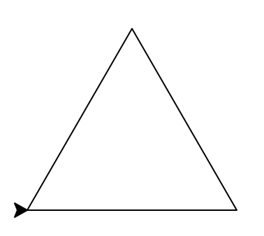
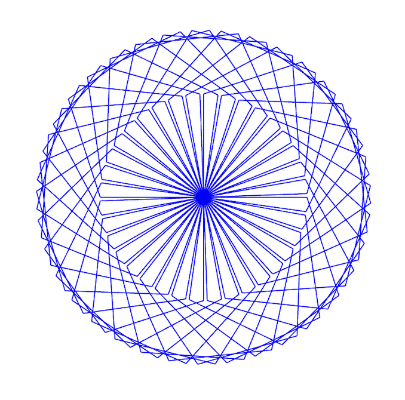

Programming Problem List
CSCI 127: Introduction to Computer Science
Hunter College, City University of New York
Fall 2025
All students registered by Friday, August 22, are sent a Gradescope registration invitation to the email on record on their Brightspace account. If you did not receive the email or would like to use a different account, fill in the form on Brightspace. Include that you not receive a Gradescope invitation, your preferred email, and your EmpID. We will manually generate an invitation. As a default, we use your name as it appears in Brightspace/CUNYFirst (to update CUNYFirst, see changing your personal information). If you prefer a different name for Gradescope, include it, and we will update the Gradescope registration.
General Notes
Learning programming is like learning a foreign language: you will learn more (with less work) if you practice every day. Some of the programs below are easy; some will take more time. We suggest you set aside a block of time most days to work on programming and the course.
The programs build on the concepts and code developed during lecture, lab, and through the reading. Mastery of material is assessed via
- Autograding of the programs submitted to Gradescope,
- Written quizzes based on the programs and labs,
- Code Reviews based on the programs, and
- Final exam on the material.
Autograder Notes
The majority of the programs this semester are written in Python (see Lab 1 for getting started with Python); it is noted below when other formats or languages are used. For Python programs, the autograder expects a .py file, using only the specified libraries, and does not accept iPython notebooks. Since all assignments are designed to be uploaded as a single file, the autograder is set up for direct file upload instead of Github. If submitting directly (drop-and-drag onto the webpage), the file name is flexible but must have the extension .py.
Also, to receive full credit, the code should be compatible with Python 3.10 (the default for the Gradescope autograders).
To get full credit for a program, the file must include in the opening comment:
- Your name, as it appears in your Gradescope registration.
- The email you are using for Gradescope.
"""
Name: Thomas Hunter
Email: thomas.hunter1870@hunter.cuny.edu
Date: September 1, 2025
This program prints: Hello, Thomas Hunter
"""
print("Hello, Thomas Hunter")
You may submit your assignments up to three weeks before the due date and are encouraged to work ahead. To receive credit, assignments must be submitted by the deadline to Gradescope. For more information on using Gradescope, see Lab 1.
Since Gradescope gives limited feedback, run your program first locally (on your computer or a lab computer) where the compiler messages will pinpoint errors and help debug your code. For example, if Gradescope gives you a "The autograder failed to execute..." error, it means your program has an error (in this case, it's usually the file contains non-Python commands.). The local Python compiler will give the line of your file with the error, where Gradescope will only say that there's a general problem. For more information on installing Python on your computer, see the installation guides.
Programming Exercises
-
Due Date: 5pm, Tuesday, September 2
Reading: Chapter 1 & Lab 1
Available Libraries: Python 3.10+Hello
Write a program that prints
Hellofollowed by your name to the screen. For example, if your name isThomas Hunter, when your program is run, it would print:Hello, Thomas Hunter -
Due Date: 5pm, Wednesday, September 3
Reading: Chapter 4 & Lab 1
Available Libraries: turtle, Python 3.10+Triangle
Write a program that draws a triangle using the
turtlelibrary.

Note: Whenever submitting a turtle program, choose a name for your file that is not turtle.py. When executing theimport turtlestatement, the computer first looks in the folder where the file is saved for the turtle module and then in the libraries (and other places on the path). If you name your file turtle.py, it thinks the module is itself, causing all kinds of errors. To avoid this, name your program something like myTurtle.py or program2.py. -
Due Date: 5pm, Thursday, September 4
Reading: Chapter 4 & Lab 1
Available Libraries: turtle, Python 3.10+Turtle Drawing
REPLACE: Match a figure, like the textbook section but a bit harder
Write a program that implements the pseudocode ("informal high-level description of the operating principle of a computer program or other algorithm") below:
Repeat 50 times: Change color to blue Walk forward 100 steps Turn left 155 degrees Change color to red Walk forward 100 stepsThe result should look as follows:

-
Due Date: 5pm, Friday, September 5
Reading: Chapter 1 & Lab 1
Available Libraries: Python 3.10+Multiple Greetings
Write a program that will print Welcome! multiple times. The number of times depends on your EmplID number. Take the last 2 digits of your EmplID number and add 10. For example, if your EmplID ends in 13, the number of times you repeat the message is 13+10 = 23.
For example, with an EmplID ending in 02, you would repeat the message 12 times:
Welcome! Welcome! Welcome! Welcome! Welcome! Welcome! Welcome! Welcome! Welcome! Welcome! Welcome! -
Due Date: 5pm, Tuesday, September 9
Reading: Chapter 4 & Lab 1
Available Libraries: turtle, Python 3.10+Flower
Write a program that implements the pseudocode ("informal high-level description of the operating principle of a computer program or other algorithm") below:
Change the pen to blue. Repeat 50 times: Repeat 5 times: Walk forward 100 steps. Turn right 72 degrees. Turn right 70 degrees.Your output should look like this:
 -
Due Date: 5pm, Wednesday, September 10
Reading: Chapter 2 & Lab 2
Available Libraries: Python 3.10+Upper & Lower
Using the string commands introduced in Lab 2, write a Python program that prompts the user for a message, and then prints the message, the message in upper case letters, and the message in lower case letters.
A sample run of your program should look like:
Enter a message: Mihi cura futuri Mihi cura futuri MIHI CURA FUTURI mihi cura futuriAnother run:
Enter a message: I love Python! I love Python! I LOVE PYTHON! i love python!Hint: Your program should be able to take any phrase the user enters and prints it, prints it in upper case letters, and prints it in lower case letters. To do that, you need to store the phrase in a variable and print variations of the stored variable. See Sections 2 and 3 of Lab 2.
-
Due Date: 5pm, Thursday, September 11
Reading: Chapter 2 & Lab 2
Available Libraries: Python 3.10+Lowercase ASCII
Write a program that prompts the user to enter a phrase, converts the phrase to uppercase, and then prints out each lowercase character and its corresponding ASCII code.
A sample run of your program should look like:
Enter a phrase: abc a 97 b 98 c 99And another sample run:
Enter a phrase: ABC a 97 b 98 c 99Another run, with a longer phrase:
Enter a phrase: I love Python! i 105 32 l 108 o 111 v 118 e 101 32 p 112 y 121 t 116 h 104 o 111 n 110 ! 33Hint: The first step is to ask the user for input (see Section 2 of Lab 2). If c is a character,
ord(c)returns its ASCII code. For example, if c is 'i', thenord(c)returns 105. See Lab 2 for more on ASCII and characters. -
Due Date: 5pm, Friday, September 12
Reading: Chapter 2 & Lab 2
Available Libraries: Python 3.10+Counting by 17's
Write a program that prints out the numbers from 850 to 1700, counting by seventeens.
The output of your program should be:
850 867 884 901 918 935 952 969 986 1003 1020 1037 1054 1071 1088 1105 1122 1139 1156 1173 1190 1207 1224 1241 1258 1275 1292 1309 1326 1343 1360 1377 1394 1411 1428 1445 1462 1479 1496 1513 1530 1547 1564 1581 1598 1615 1632 1649 1666 1683 1700 -
Due Date: 5pm, Tuesday, September 16
Reading: Chapter 4 & Lab 2
Available Libraries: turtle, Python 3.10+Expanding Hexadecagon
Write a program, using the turtle library, that implements the pseudocode below:
For i = 60, 62, 64, 26, ... ,110: Turn pen red. Walk forward i steps. Turn left 45 degrees. Turn pen blue. Walk forward i steps Turn right 90 degreesYour output should look similar to:
Hint: See examples of
range(start,stop,step)in Section 4 of Lab 2.
More to come...